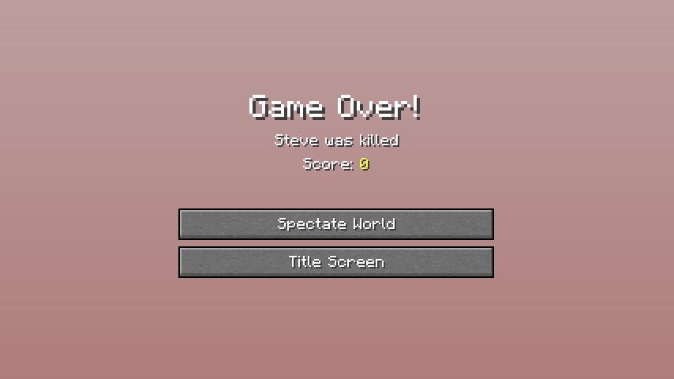
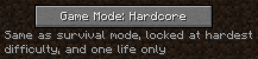
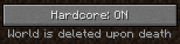
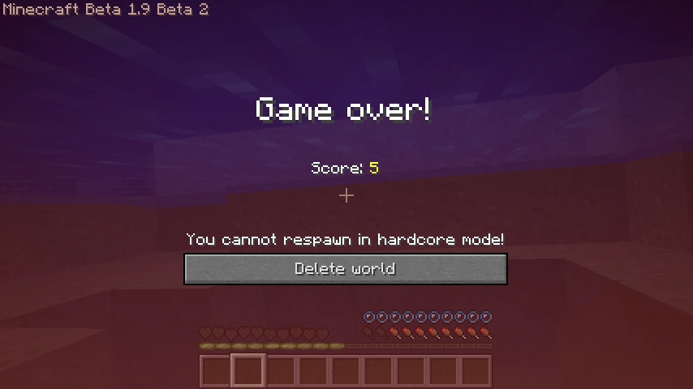

Hardcore
Hardcore is a variant of Survival and one of the main game modes in Minecraft. In this mode, the world is locked to Hard difficulty and the player cannot respawn after dying.

Features

The key feature of Hardcore mode is that the player is not given the option to respawn upon death as they would in other game modes. Instead, there are two buttons on the death screen: "Spectate world" and "Title screen". "Spectate world" sets the player to Spectator mode and respawns the player at the world's spawn point, making them able to view and explore the world only in that mode. The "Title screen" button simply leads the player to the main menu screen; re-opening the world simply returns the player back to the same death screen as before. Respawn anchors do not resurrect players in Hardcore mode.
In addition, Hardcore mode worlds are restricted to Hard difficulty, being the second key feature.
When creating a Hardcore mode world, the Enable Cheats and Bonus Chest world options are locked to OFF. On the world selection menu, Hardcore mode worlds display dark red text reading "Hardcore Mode!"
Multiplayer
Hardcore mode is an option for multiplayer, and its functions are similar to those in singleplayer. All players have Hardcore mode enabled — it is not possible for some players to be in Hardcore and some not.
Server operators (OPs) can use the /gamemode command to change the game mode of themselves or another player.
History


| Java Edition Beta | ||
|---|---|---|
| November 22, 2010 | The idea of Hardcore mode came to Notch from a Minecraft gameplay blog on the PC Gamer site. [1] | |
| Java Edition | ||
| September 23, 2011 | Notch tweeted an image of a button that enables Hardcore mode. | |
| September 28, 2011 | Notch tweeted an image of the Hardcore mode death screen. | |
| 1.0.0 | Beta 1.9 Prerelease 2 | Hardcore mode added. Upon death, the "Delete World" button and "You cannot respawn in Hardcore Mode!" text are shown. |
| 1.3.1 | 12w17a | The 'Bonus Chest' and 'Enable Cheats' world options cannot be enabled in Hardcore mode (server operators' commands are not affected by Hardcore mode). |
| 12w18a | Hardcore mode can now be used in multiplayer. | |
| 1.9 | 15w37a | Rather than deleting the world upon death, the player now has the option to be put into Spectator mode. Also The "You cannot respawn in Hardcore Mode!" text are hidden/disappeared/Removed [2] |
| 1.15 | 19w35a | "Delete world" on the Hardcore death screen has been replaced by "Title screen", meaning players must manually delete the world. |
| 1.21.2 | Hardcore mode is now available on Realms | |
Issues
Issues relating to "Hardcore" are maintained on the bug tracker. Report issues there.